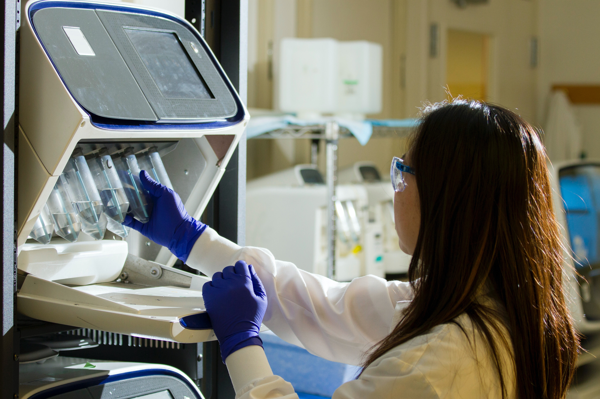

화공생명공학은 자연과학과 공학적 지식에 기반한 대표적 융합 학문으로서 화학· 전자소재 · 에너지 공정의 설계 · 분석 · 제어와 함께 분자 수준의 미세공학적 접근이 요구되는 차세대 첨단소재, 신재생에너지, 이차전지, 환경오염 저감, 질병진단, 인공생명체 및 바이오의약품, 복합용도 화장품 등의 세부분야를 포함합니다.
화공생명공학부는 미래지향적 첨단기술분야에 초점을 맞추어 실용적이고도 산업친화적인 연구와 전인적 · 여성친화적인 공학교육의 실천을 지향합니다. 혁신적인 전공수업과 실용적이면서도 심도 있는 교양수업을 통해 전문화된 전공지식과 인문학적 소양을 겸비하고 학문의 경계를 뛰어넘을 수 있는 융합형 공학 리더 양성을 목표로 합니다. 더불어 학부와 기업 간의 다양한 산학협력과 세계 최고 수준의 공과대학과의 국제적 교류를 전개하여 공학적 실무능력과 글로벌 역량을 겸비한 여성 인재를 양성하고자 합니다.
